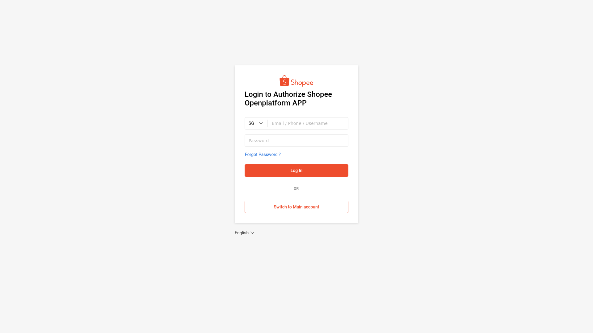

Shopee: chat
A autenticação do chat da Shopee no ERP da Olist liga a conta do canal às conversas. Com o chat autorizado, você usa uma lista única de conversas de produto e de pedido, com anexos e filtros de não lido e lido.
A autorização fica na integração já instalada, em Autenticação Chat.
Pré-requisitos
- Conta na Shopee para autorizar o chat.
- Integração Shopee já conectada.
Importante
- Autorize o chat antes de usar as conversas. Enquanto a Autenticação Chat estiver desconectada, as conversas não ficam disponíveis.
- Gerenciar abre a autorização na Shopee. Não há formulário de senha no ERP.
- O uso das conversas pode exigir uma extensão.
Instruções
Pela integração
-
Acesse Início > Integrações.
-
No card Shopee, clique em gerenciar.
-
Em Autenticação Chat, clique em gerenciar.
-
Autorize a conta na tela da Shopee. O chat permanece desconectado até essa autorização.

Pela aba Chat
-
Faça login na aba Chat.
-
Acesse Vendas > Perguntas do e-commerce. A lista reúne conversas de produto e de pedido, com anexos e filtros de não lido e lido.